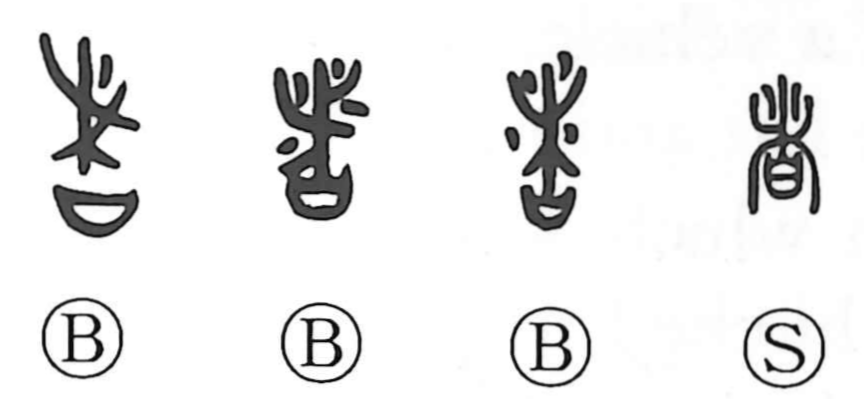

者

Kun: mono | On: sha
person ・ someone
Explanation
者 combines branching sticks with 曰, a receptacle holding written prayers. Small marks in the early upper part indicate earth packed around the sticks. The scene is a protective earthwork surrounding a settlement, with a prayer text buried inside it to bar harmful spirits.
者 is the earlier writing of 堵, the wall or earthwork. Adding 聿, a brush, gives 書, the sacred writing placed within that barrier. 曰 preserves the prayer receptacle beneath the earthwork.
The familiar uses for ‘person’ or ‘one who’ are sound loans. The word can specify a thing or an entire circumstance as well as a person, and it develops grammatical functions such as marking a topic or condition.